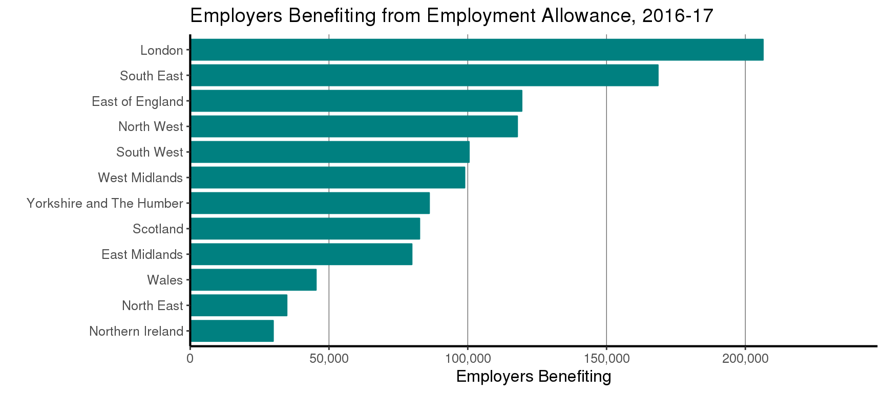

Coverage:
United Kingdom
Theme: The Economy
Released:
27 April 2017
Next release:
Spring 2018
Frequency of release:
Annual
Media contact:
HMRC Press Office
03000 585 024
Statistical contacts:
David McDonald
03000 561 367
david.mcdonald@hmrc.gsi.gov.uk
Cathal McDermott
03000 584 769
cathal.mcdermott@hmrc.gsi.gov.uk
KAI Personal Taxes
HM Revenue and Customs
100 Parliament Street
London
SW1A 2BQ
Website: https://www.gov.uk/government/collections/employment-allowance-take-up-statistics
2016-17 full year estimates
Official Statistics
April 2017
Employment Allowance take-up statistics
This release covers take-up of the Employment Allowance (EA) for the full tax year 2016-17. The EA came into effect in April 2014 and provided eligible employers with a reduction of up to £2,000 in their National Insurance contributions (NICs) which they pay on their employees. In April 2016, the allowance rose to £3,000. The allowance is available to business, charities, amateur sports clubs and, from April 2015, domestic employers of care and support workers.
However, from April 2016 limited companies where the director is the only employee paid earnings above the Secondary Threshold for Class 1 National Insurance contributions have no longer been able to claim the allowance. As expected this policy change has led to an overall decrease in the numbers taking up the EA in 2016-17 from 2015-16 with take-up decreasing by around 120,000 (9%). This has decreased take-up of the allowance across regions, sectors, constituencies and small employers where there are concentrations of companies affected by this measure. Other domestic employers and public sector employers whose work is wholly or partly (>50%) of a public nature are not eligible for the allowance.
The EA can be claimed through an employer’s payroll system which is then processed through HMRC’s Real Time Information (RTI) systems. An employer can claim their eligibility for the allowance by submitting an Employer Payment Summary (EPS). When an employer then sends through their Full Payment Submissions (FPS) when submitting their payroll the EA is offset against their Class 1 secondary NICs liabilities due on their employee(s). An employer must generate a NICs liability to benefit from the allowance. The amount of Class 1 secondary NICs due for payment can be reduced by a maximum of £3,000 in a given tax year.
In this release, employers are classified as having taken up the EA if they have both claimed eligibility and had some amount of the EA offset against the amount of Class 1 secondary NICs which they pay to HMRC.
| Region |
Employers benefiting |
As a percentage of all employers benefitting |
|---|---|---|
| North East | 35,000 | 3% |
| North West | 118,000 | 10% |
| Yorkshire and The Humber | 86,000 | 7% |
| East Midlands | 80,000 | 7% |
| West Midlands | 99,000 | 8% |
| East of England | 119,000 | 10% |
| London | 206,000 | 18% |
| South East | 168,000 | 14% |
| South West | 100,000 | 9% |
| Wales | 45,000 | 4% |
| Scotland | 83,000 | 7% |
| Northern Ireland | 30,000 | 3% |
| United Kingdom | 1,170,000 | 100% |
1 Figures are rounded to the nearest 1,000.
2 Total may not necessarily add up to the sum of the regions due to rounding and small numbers of employers which fall outside these regions (such as the Channel Islands).
3 Take up estimates are based on information from HMRC’s Real Time Information (RTI) and Enterprise Tax Management Platform (ETMP) data systems.
4 Cases without region information have been apportioned across regions based on the distribution of cases where region information is known.
5 Location is taken from the postcode of the PAYE scheme which is benefitting from the Employment Allowance.

| Sector | Employers benefiting | As a percentage of all employers benefitting |
|---|---|---|
| Accommodation and Food Service Activities | 103,000 | 9% |
| Activities of Households as Employers; Undifferentiated Goods-and Services-Producing Activities of Households for Own Use | 30,000 | 3% |
| Administrative and Support Service Activities | 112,000 | 10% |
| Agriculture, Forestry and Fishing | 28,000 | 2% |
| Arts, Entertainment and Recreation | 24,000 | 2% |
| Construction | 127,000 | 11% |
| Education | 24,000 | 2% |
| Electricity, Gas, Steam and Air Conditioning Supply | 1,000 | <1% |
| Financial and Insurance Activities | 19,000 | 2% |
| Human Health and Social Work Activities | 64,000 | 5% |
| Information and Communication | 67,000 | 6% |
| Manufacturing | 74,000 | 6% |
| Mining and Quarrying | 1,000 | <1% |
| Other Service Activities | 66,000 | 6% |
| Professional, Scientific and Technical Activities | 164,000 | 14% |
| Public Administration and Defence; Compulsory Social Security | <1,000 | <1% |
| Real Estate Activities | 28,000 | 2% |
| Transportation and Storage | 40,000 | 3% |
| Water Supply; Sewerage, Waste Management and Remediation Activities | 4,000 | <1% |
| Wholesale and Retail Trade; Repair of Motor Vehicles and Motorcycles | 194,000 | 17% |
| All Sectors | 1,170,000 | 100% |
1 Figures are rounded to the nearest 1,000.
2 Total may not necessarily add up to the sum of the sectors due to rounding and small numbers of employers which fall in sectors which are typically excluded from the allowance (i.e. public sector).
3 Take up estimates are based on information from HMRC’s Real Time Information (RTI) and Enterprise Tax Management Platform (ETMP) data systems.
4 Cases without sector information have been apportioned across sectors based on the distribution of cases where sector information is known.
| Employer size by number of employees |
Employers benefiting |
As a percentage of all employers benefitting |
|---|---|---|
| 1-9 | 946,000 | 81% |
| 10-49 | 188,000 | 16% |
| 50-249 | 31,000 | 3% |
| 250+ | 5,000 | <1% |
| All employers | 1,170,000 | 100% |
1 Figures are rounded to the nearest 1,000.
2 Total may not necessarily add up to the sum of employer sizes due to rounding.
3 Take up estimates are based on information from HMRC’s Real Time Information (RTI) and Enterprise Tax Management Platform (ETMP) data systems.
4 Cases without employer size information have been apportioned across bands based on the distribution of cases where employer information is known.
An Official Statistics Publication
These Official Statistics are produced to high professional standards in accordance with the Statistics and Registration Service Act 2007, signifying compliance with the Code of Practice for Official Statistics. They will undergo regular quality assurance reviews to ensure that they meet customer needs and are produced free from any political interference.
Counts for the number of employers who have taken up the Employment Allowance (EA) come from the PAYE accounting system (the Enterprise Tax Management Platform - ETMP) linked to the Real Time Information (RTI).
A PAYE scheme will be counted if they have both claimed the EA and have offset some amount of the EA against their Class 1 secondary NICs liabilities.
Postcode information, which is used to present region and constituency level breakdowns, has been taken from the Office for National Statistics’ Inter-departmental Business Registry (IDBR). The IDBR to the ETMP produced a match rate of 93% for postcode information. The postcode used corresponds to the PAYE scheme which is claiming the EA.
Sector information also comes from the IDBR based on the Standard Industry Classification (SIC) 2007. At 93%, the match rate for sector is similar to that of postcode.
Employee size information comes from RTI and is a measure of employee count corresponding to the PAYE scheme which is claiming the EA. The match rate is close to 100%.
HMRC is committed to providing impartial quality statistics that meet our users’ needs. We encourage our users to engage with us so that we can improve our statistics and identify gaps in the statistics that we produce. Please see the following link for HMRC Statistics “Continuous User Engagement Strategy”:
https://www.gov.uk/government/uploads/system/uploads/attachment_data/file/278751/HMRC_statistics_continous_user_engagement.pdf
If you would like to comment on these statistics or have any enquiries on the statistics please use the statistical contacts named at the end of this section and on the cover page.
Statistical contacts:
David McDonald
03000 561 367
david.mcdonald@hmrc.gsi.gov.uk
Cathal McDermott
03000 584 769
cathal.mcdermott@hmrc.gsi.gov.uk